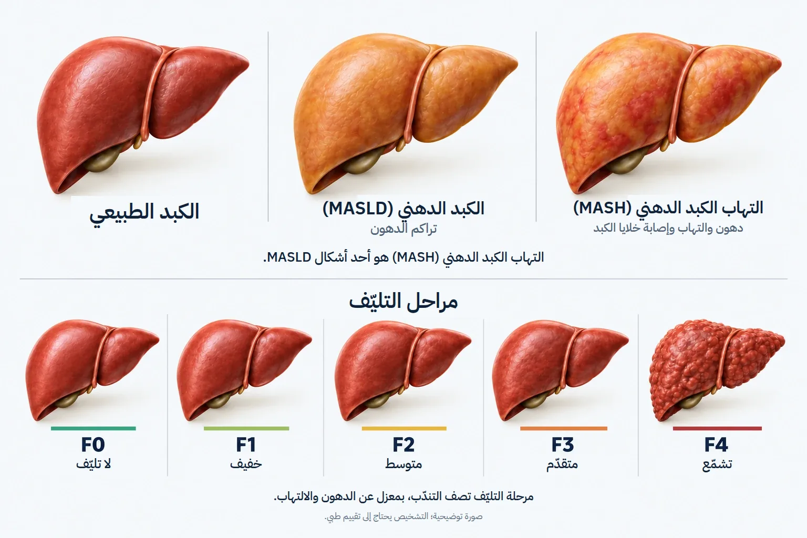

الكبد الدهني شائع وصامت، ويمكن علاجه إذا اكتُشف مبكرًا.
تثقيف واضح وموثوق عن الكبد الدهني (MASLD) والتهاب الكبد الدهني (MASH) بالعربية والإنجليزية، للمرضى وأسرهم وللأطباء الذين يرعونهم.
أنا مريض أو من أسرة مريض
بوابة المرضى وأسرهم: أدلة مبسطة، وإجابات عن 28 سؤالًا، وفحص سريع لعوامل الخطر.
أنا طبيب أو من العاملين في الصحة
بوابة الأطباء للعاملين في المجال الصحي: مرجع علمي، وحاسبتا FIB-4 وNFS، وتعلّم حسب تخصصك.
مع مرور السنين قد يسبّب الكبد الدهني تندّبًا في الكبد. يصنّف الأطباء هذا التندّب (التليّف) إلى خمس مراحل:
F0لا يوجد تليّف
F1خفيف
F2متوسط
F3متقدّم
F4تشمّع
أفضل وقت لاكتشافه والتدخّل
في هذه المراحل، يمكن للتليّف أن يتحسّن غالبًا.
يحتاج إلى طبيب كبد
ابدأ من هنا
الكبد الدهني في لمحة
من الكبد الطبيعي إلى تراكم الدهون (MASLD) ثم الالتهاب (MASH)، ومراحل التليّف الخمس (من F0 إلى F4).

جلسات الخبراء القادمة
لقاء مع خبيرالفعاليات القادمة
كل الأخبار والفعالياتآخر الأخبار
عرض الكلمحاضرات توعوية بالعربية
كل الفيديوهاتعن الأكاديمية
أكاديمية الكبد والتمثيل الغذائي أكاديمية تعليمية مستقلة ثنائية اللغة لأمراض الكبد الدهني. كل ما ننشره مجاني، ويتبع الإرشادات الدولية والسعودية، ويذكر مصادره، ويُظهر سجلًا علنيًا للصفحة.
- أسّسها ويديرها د. محمود الدسوقي، استشاري الباطنة والجهاز الهضمي
- مفتوحة للمراجعين المختصين وأعضاء هيئة التدريس من أنحاء المنطقة
- بلا رعاة، ولا إعلانات، ولا ملفات تعريف ارتباط
لماذا منطقتنا
39%
من سكان الشرق الأوسط وشمال أفريقيا لديهم كبد دهني
69%
من مرضى السكري من النوع الثاني في المنطقة
اطّلع على الأدلة →